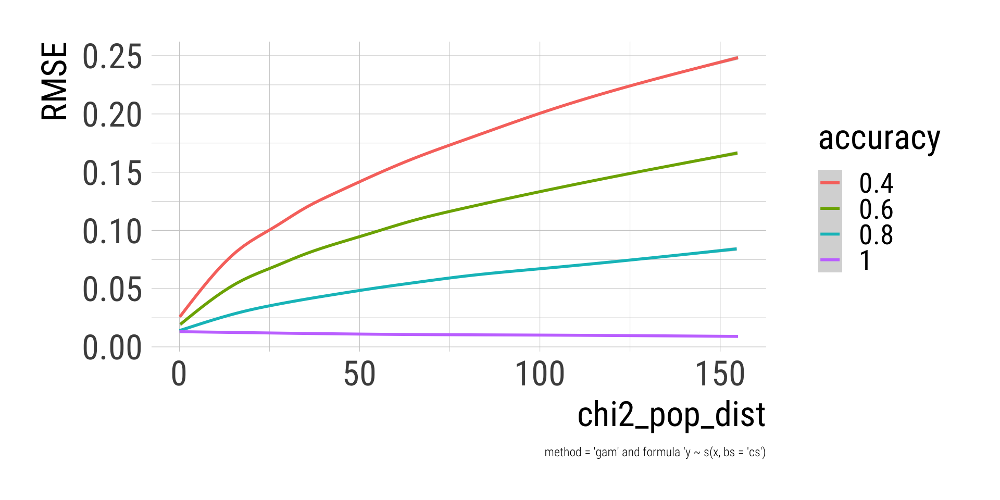

set.seed(28)
pop_dist = c(0.55, 0.3, 0.1, 0.05)
k = length(pop_dist) # number of categories
categories = LETTERS[1:k] # names of the categories
names(pop_dist) = categories
pop_dist A B C D
0.55 0.30 0.10 0.05 Data Simulation with Monte Carlo Methods
Marko Bachl
University of Hohenheim
Introduction & overview
Monte Carlo Simulation?
Proof by simulation — The Central Limit Theorem (CLT)
Errors and power — Torturing the t-test
Misclassification and bias — Messages mismeasured
Outlook: What’s next?
Univariate analysis of the misclassified variable
Misclassified variables as predictors
Misclassification: Measurement error in categorical variables
Units are assigned the “wrong” category.
Important, but often ignored issue in (computational and human) content analysis:
Biased estimates
Reduced power of statistical tests
\[ \Theta_A = \begin{pmatrix} \theta_{1|1} & \theta_{1|2} & \theta_{1|\dots} & \theta_{1|k} \\ \theta_{2|1} & \theta_{2|2} & \theta_{2|\dots} & \theta_{2|k} \\ \theta_{\dots|1} & \theta_{\dots|2} & \theta_{\dots|\dots} & \theta_{\dots|k} \\ \theta_{k|1} & \theta_{k|2} & \theta_{k|\dots} & \theta_{k|k} \end{pmatrix} \]
Probability that each category is assigned given the true category.
Columns sum to 1
Question: What is the goal of the simulation?
Quantities of interest: What is measured in the simulation?
Evaluation strategy: How are the quantities assessed?
Conditions: Which characteristics of the data generating model will be varied?
Data generating model: How are the data simulated?
How to (somewhat efficiently) implement misclassification?
How to evaluate the deviation of estimates from population values?
How to sample population distributions from a \(\sf{Dirichlet}\) distribution?
How to implement a randomly sampled factor in the simulation?
Sample units from population
Measure variable with misclassification error
n = 1000 # sample size
sample_true = sample(x = categories,
size = n,
replace = TRUE,
prob = pop_dist) %>%
factor(levels = categories) %>% # if any categories not observed in the sample
sort() # important later for efficient misclassification
freq_true = sample_true %>%
table() %>%
prop.table()
freq_true.
A B C D
0.563 0.307 0.085 0.045 # Simple: Equal error rates, equal difficulties, one process
accuracy = 0.8
equal_error = (1 - accuracy) / (k - 1)
misclass_prop = matrix(equal_error, nrow = k, ncol = k,
dimnames = list(categories, categories))
diag(misclass_prop) = accuracy
misclass_prop A B C D
A 0.80000000 0.06666667 0.06666667 0.06666667
B 0.06666667 0.80000000 0.06666667 0.06666667
C 0.06666667 0.06666667 0.80000000 0.06666667
D 0.06666667 0.06666667 0.06666667 0.80000000tic()
sample_obs = table(sample_true) %>% # k samples
imap(~ sample(categories,
size = .x, replace = TRUE,
prob = misclass_prop[, .y])) %>%
unlist(use.names = FALSE) %>%
factor(levels = categories)
freq_obs = sample_obs %>%
table() %>%
prop.table()
toc()0.003 sec elapsed.
A B C D
0.496 0.299 0.128 0.077 sim_misclass = function(pop_dist = c(0.55, 0.3, 0.1, 0.05),
n = 1000,
accuracy = 0.8) {
# Population
k = length(pop_dist)
categories = LETTERS[1:k]
# Sample
sample_true = sample(x = categories,
size = n,
replace = TRUE,
prob = pop_dist) %>%
factor(levels = categories) %>%
sort()
freq_true = sample_true %>%
table() %>%
prop.table()
# Misclassification
equal_error = (1 - accuracy) / (k - 1)
misclass_prop = matrix(equal_error, nrow = k, ncol = k,
dimnames = list(categories, categories))
diag(misclass_prop) = accuracy
sample_obs = table(sample_true) %>%
imap(~ sample(categories,
size = .x, replace = TRUE,
prob = misclass_prop[, .y])) %>%
unlist(use.names = FALSE) %>%
factor(levels = categories)
freq_obs = sample_obs %>%
table() %>%
prop.table()
# Error summary
rmse = sqrt(mean((pop_dist - freq_obs)^2))
# Output
out = lst(freq_true, freq_obs, rmse)
out
}pop_dist must be wrapped into another list, because the condition is defined by the vector of proportions.
n (sample size) fixed.
Between-simulation factor: accuracy.
conditions = expand_grid(
pop_dist = list(c(0.55, 0.3, 0.1, 0.05)),
n = 1000,
accuracy = seq(from = 0.4, to = 1, by = 0.1)
) %>%
rowid_to_column(var = "condition")
conditions# A tibble: 7 × 4
condition pop_dist n accuracy
<int> <list> <dbl> <dbl>
1 1 <dbl [4]> 1000 0.4
2 2 <dbl [4]> 1000 0.5
3 3 <dbl [4]> 1000 0.6
4 4 <dbl [4]> 1000 0.7
5 5 <dbl [4]> 1000 0.8
6 6 <dbl [4]> 1000 0.9
7 7 <dbl [4]> 1000 1 sims %>%
ungroup() %>%
unnest_wider(res) %>%
unnest_longer(freq_obs, indices_to = "category") %>%
group_by(accuracy, category) %>%
summarise(Q = list(quantile(freq_obs, probs = c(0.25, 0.5, 0.75)))) %>%
unnest_wider(Q) %>%
ggplot(aes(`50%`, factor(accuracy),
xmin = `25%`, xmax = `75%`, color = category)) +
geom_pointrange() +
labs(x = str_glue("Median and IQR of the proportions from {i} simulation runs per condition."),
y = "accuracy")Bias towards \(1/k\).
Less accuracy, stronger bias. Substantial bias even with seemingly sufficient accuracy.
Stronger bias for categories which are farther from \(1/k\).
Implies: More uneven distributions, stronger bias — but how much?
Add varying population distributions - but how?
One possible solution: Factor of different distributions, e.g.,
Only accuracy is varied between conditions.
pop_dist is sampled from rdirichlet(alpha = c(1,1,1,1)) for each simulation run.
i (number of simulations) and set.seed() required for building conditions.
i = 5000
set.seed(39)
conditions = expand_grid(
n = 1000,
accuracy = seq(from = 0.4, to = 1, by = 0.2)
) %>%
rowid_to_column(var = "condition")
conditions = map_dfr(1:i, ~ conditions) %>%
rowid_to_column(var = "sim") %>%
mutate(pop_dist = split(rdirichlet(nrow(.), c(1,1,1,1)), 1:nrow(.)))
conditions# A tibble: 20,000 × 5
sim condition n accuracy pop_dist
<int> <int> <dbl> <dbl> <named list>
1 1 1 1000 0.4 <dbl [4]>
2 2 2 1000 0.6 <dbl [4]>
3 3 3 1000 0.8 <dbl [4]>
4 4 4 1000 1 <dbl [4]>
5 5 1 1000 0.4 <dbl [4]>
6 6 2 1000 0.6 <dbl [4]>
7 7 3 1000 0.8 <dbl [4]>
8 8 4 1000 1 <dbl [4]>
9 9 1 1000 0.4 <dbl [4]>
10 10 2 1000 0.6 <dbl [4]>
# … with 19,990 more rows
# ℹ Use `print(n = ...)` to see more rowsn) distribution.sims %>%
ungroup() %>%
unnest_wider(res) %>%
mutate(chi2_pop_dist = map_dbl(pop_dist, ~ chisq.test(.x*100)$statistic)) %>%
ggplot(aes(chi2_pop_dist, rmse, color = factor(accuracy))) +
geom_smooth() +
xlim(0, 155) +
labs(x = "chi2_pop_dist",
color = "accuracy",
y = "RMSE",
caption = "method = 'gam' and formula 'y ~ s(x, bs = 'cs')")
sims %>%
ungroup() %>%
unnest_wider(res) %>%
mutate(chi2_pop_dist = map_dbl(pop_dist, ~ chisq.test(.x*100)$statistic)) %>%
filter(round(chi2_pop_dist) %in% c(0, 25, 50, 75, 100, 125, 150)) %>%
group_by(round(chi2_pop_dist)) %>%
slice(1) %>%
ungroup() %>%
arrange(chi2_pop_dist) %>%
select(chi2_pop_dist, pop_dist) %>%
mutate(pop_dist = map(pop_dist, sort, decreasing = TRUE)) %>%
unnest_wider(pop_dist) %>%
kable(digits = 2, col.names = c("chi2_pop_dist", LETTERS[1:4]))| chi2_pop_dist | A | B | C | D |
|---|---|---|---|---|
| 0.11 | 0.26 | 0.26 | 0.25 | 0.24 |
| 24.58 | 0.40 | 0.34 | 0.14 | 0.12 |
| 50.27 | 0.53 | 0.25 | 0.15 | 0.06 |
| 74.82 | 0.62 | 0.17 | 0.12 | 0.09 |
| 99.68 | 0.68 | 0.16 | 0.10 | 0.06 |
| 124.52 | 0.73 | 0.13 | 0.07 | 0.06 |
| 150.11 | 0.77 | 0.16 | 0.04 | 0.03 |
Deviation of the populations distribution from equal proportions is strongly related to error magnitude, such that more unequal proportions are estimated less accurate.
There seems to be a non-linear interaction between population distribution and accuracy, such that the consequences of lesser accuracy are more severe for more unequal distribution.
Assignment of random values at each simulation run as an alternative
Also an option for accuracy (runif(min = 0.4, 1.0)) or sample size (sample(x = 300:2000, replace = TRUE), see Section 4)
Most helpful if we want to look at an outcome across the whole range of values. Not so helpful if discretized after the simulation.
Univariate analysis of the misclassified variable
Misclassified variables as predictors
Question: What is the goal of the simulation?
Quantities of interest: What is measured in the simulation?
Observed group differences and their ratios to the true group differences
Statistical power to detect the difference with \(p < .05\) in Welch’s t-test
Evaluation strategy: How are the quantities assessed?
Inspection of the deviation between true and observed differences and their ratios across conditions
Comparison of statistical power to reject the Null hypothesis if the alternative hypothesis is true
Conditions: Which characteristics of the data generating model will be varied?
Data generating model: How are the data simulated?
Grouping variable: Random draws from a categorical distribution; subsequent misclassification of the sampled units
Outcome: Random draws from Poisson distributions with different \(\lambda\) values
Sample units from population
Measure variable with misclassification error
Sample outcome from population
n = 1000 # sample size
sample_true = sample(x = categories,
size = n,
replace = TRUE,
prob = pop_dist) %>%
factor(levels = categories) %>% # if any categories not observed in the sample
sort() # important later for efficient misclassification
freq_true = sample_true %>%
table() %>%
prop.table()
freq_true.
A B C D
0.568 0.290 0.100 0.042 lambdas = c(21:24)
names(lambdas) = categories
outcomes = table(sample_true) %>%
imap(~ rpois(n = .x, lambda = lambdas[.y])) %>%
unlist(use.names = FALSE)
table(sample_true, outcomes) outcomes
sample_true 8 10 11 12 13 14 15 16 17 18 19 20 21 22 23 24 25 26 27 28 29 30
A 1 2 8 4 7 16 24 33 41 36 43 56 50 39 44 59 28 24 17 12 9 6
B 0 0 0 0 7 7 8 12 14 16 22 19 19 30 27 20 19 16 17 8 6 9
C 0 0 0 0 2 3 2 3 6 2 8 6 4 6 7 7 6 5 7 6 10 2
D 0 0 0 0 0 0 1 1 4 1 2 2 2 4 2 4 3 4 4 3 1 1
outcomes
sample_true 31 32 33 34 35 42
A 2 2 2 2 0 1
B 7 0 2 4 1 0
C 3 2 3 0 0 0
D 1 0 1 1 0 0# Simple: Equal error rates, equal difficulties, one process
accuracy = 0.8
equal_error = (1 - accuracy) / (k - 1)
misclass_prop = matrix(equal_error, nrow = k, ncol = k,
dimnames = list(categories, categories))
diag(misclass_prop) = accuracy
misclass_prop A B C D
A 0.80000000 0.06666667 0.06666667 0.06666667
B 0.06666667 0.80000000 0.06666667 0.06666667
C 0.06666667 0.06666667 0.80000000 0.06666667
D 0.06666667 0.06666667 0.06666667 0.80000000tic()
sample_obs = table(sample_true) %>% # k samples
imap(~ sample(categories,
size = .x, replace = TRUE,
prob = misclass_prop[, .y])) %>%
unlist(use.names = FALSE) %>%
factor(levels = categories)
freq_obs = sample_obs %>%
table() %>%
prop.table()
toc()0.003 sec elapsed.
A B C D
0.476 0.287 0.142 0.095
sim_misclass_test = function(pop_dist = c(0.55, 0.3, 0.1, 0.05),
lambdas = c(3:6),
n = 1000,
accuracy = 0.8) {
# Population
k = length(pop_dist)
categories = LETTERS[1:k]
names(lambdas) = categories
# True sample
sample_true = sample(x = categories,
size = n,
replace = TRUE,
prob = pop_dist) %>%
factor(levels = categories) %>%
sort()
freq_true = sample_true %>%
table() %>%
prop.table()
outcomes = table(sample_true) %>%
imap(~ rpois(n = .x, lambda = lambdas[.y])) %>%
unlist(use.names = FALSE)
# Misclassification probabilities
equal_error = (1 - accuracy) / (k - 1)
misclass_prop = matrix(equal_error, nrow = k, ncol = k,
dimnames = list(categories, categories))
diag(misclass_prop) = accuracy
# Misclassification
sample_obs = table(sample_true) %>%
imap(~ sample(categories,
size = .x, replace = TRUE,
prob = misclass_prop[, .y])) %>%
unlist(use.names = FALSE) %>%
factor(levels = categories)
freq_obs = sample_obs %>%
table() %>%
prop.table()
# Model
ttests_obs = categories[2:k] %>%
map(~ t.test(outcomes[sample_obs == "A"],
outcomes[sample_obs == .x])) %>%
set_names(str_c("A_", categories[2:k]))
# Error summary for categories
rmse = sqrt(mean((pop_dist - freq_obs)^2))
# Output
out = lst(freq_true, freq_obs, rmse,
p_obs = ttests_obs %>%
map_dbl(~ .x$p.value),
diff_obs = ttests_obs %>%
map_dbl(~ diff(.x$estimate))
)
out
}lambdas is a named list with two sets of values. The group differences are the same in both conditions, but the variances differ strongly.
Between-simulation factor: accuracy varies with 4 values.
pop_dist and n (sample size) are fixed.
conditions = expand_grid(
pop_dist = list(c(0.55, 0.3, 0.1, 0.05)),
lambdas = list(start_1 = c(1:4),
start_21 = c(21:24)),
n = 1000,
accuracy = seq(from = 0.4, to = 1, by = 0.2)
) %>%
rowid_to_column(var = "condition")
conditions# A tibble: 8 × 5
condition pop_dist lambdas n accuracy
<int> <list> <named list> <dbl> <dbl>
1 1 <dbl [4]> <int [4]> 1000 0.4
2 2 <dbl [4]> <int [4]> 1000 0.6
3 3 <dbl [4]> <int [4]> 1000 0.8
4 4 <dbl [4]> <int [4]> 1000 1
5 5 <dbl [4]> <int [4]> 1000 0.4
6 6 <dbl [4]> <int [4]> 1000 0.6
7 7 <dbl [4]> <int [4]> 1000 0.8
8 8 <dbl [4]> <int [4]> 1000 1 sims %>%
ungroup() %>%
unnest_wider(res) %>%
unnest_longer(diff_obs, indices_to = "difference") %>%
mutate(lambdas = names(lambdas)) %>%
group_by(accuracy, difference, lambdas) %>%
summarise(Q = list(quantile(diff_obs, probs = c(0.25, 0.5, 0.75)))) %>%
unnest_wider(Q) %>%
ggplot(aes(`50%`, factor(accuracy),
xmin = `25%`, xmax = `75%`, color = difference)) +
geom_pointrange() +
facet_wrap(vars(lambdas)) +
labs(y = "accuracy",
x = str_glue("Median and IQR of the mean differences from {i} simulation runs per condition."))sims %>%
ungroup() %>%
unnest_wider(res) %>%
unnest_longer(diff_obs, indices_to = "difference") %>%
mutate(
diff_true = case_when(
difference == "A_B" ~ 1L,
difference == "A_C" ~ 2L,
difference == "A_D" ~ 3L
),
recovered = diff_obs / diff_true,
lambdas = names(lambdas)
) %>%
select(accuracy, difference, lambdas, diff_obs, diff_true, recovered) %>%
group_by(accuracy, difference, lambdas) %>%
summarise(Q = list(quantile(recovered, probs = c(0.25, 0.5, 0.75)))) %>%
unnest_wider(Q) %>%
ggplot(aes(`50%`, factor(accuracy),
xmin = `25%`, xmax = `75%`, color = difference)) +
geom_pointrange() +
facet_wrap(vars(lambdas)) +
labs(y = "accuracy",
x = str_glue("Median and IQR of the ratio true by observed difference\nfrom {i} simulation runs per condition."))sims %>%
ungroup() %>%
mutate(lambdas = names(lambdas)) %>%
unnest_wider(res) %>%
unnest_longer(p_obs, indices_to = "difference") %>%
group_by(accuracy, difference, lambdas) %>%
summarise(P_p05 = mean(p_obs < 0.05)) %>%
ggplot(aes(accuracy, P_p05, color = difference)) +
geom_point() + geom_line() +
facet_wrap(vars(lambdas)) +
labs(y = "Power at p < .05")Misclassification of the grouping variable attenuates the group differences and reduces statistical power.
Even a seemingly ok-ish accuracy of .8 can lead to a reduction of the observed differences to 50% of the true difference in some instances.
The level of within-group variances obviously reduces statistical power, but does not seem to be related to the average bias of the observed differences.
Change the misclassification probabilities to allow for different patterns accuracies and errors: varying difficulties of the categories, systematic confusion of some categories.
Change the analysis to a cross-table of two categorical variables which were both measured with misclassification error.
Based on the second simulation study, design an experiment to systematically investigate the role of group size, group means and variances, and accuracy. Also take their interactions into account.